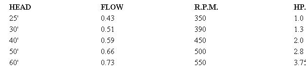

Dramatic contrast in wheel sizes. Top, a 25-ton job designed for installation in a 30,000-hp. unit. It turns at 171 r.p.m. and has a 1,008' head. Below, a 12"" wheel with reducer and gatevalve throttle.